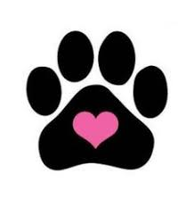

.jpeg)
CHEWPAWS

La Esterilización
¿Piensas cruzar a tu perro cuando hay tantos en la calle esperando un hogar?
La crueldad hacia los animales empieza cuando tú permites el nacimiento de perros y gatos que tú no quieres y a los que no les puedes regalar una calidad de vida óptima. ¡Esteriliza, no críes! ¡No permitas que haya más peludos sufriendo y muriendo en la calle!
Tú sabes qué vida le puedes dar al tuyo, pero te aseguramos que no hay tantas familias buenas como peludos buscando ser amados y cuidados. Un perrit@ puede tener, a lo largo de su vida, una descendencia de alrededor de 60,000 cachorros. No lo permitas, por favor, esteriliza.
- Evitarás comportamientos indeseables relacionados con las hormonas. Las hembras no entrarán en calor y dejarán de atraer la presencia de los machos. El macho se volverá más doméstico y no tendrá la necesidad hormonal de vagabundear.
- Disminuirás la posibilidad de que pueda ser robado para la crianza o que se escape y pueda ser atropellado o envenenado.
- Los perros y gatos esterilizados son menos propensos a sufrir enfermedades como el cáncer de útero y mamas en las hembras y cáncer de próstata en los machos.
- Reduces la necesidad de marcar territorio y el comportamiento agresivo o ansioso, lo que ayuda a disminuir la incidencia de mordeduras y ataques entre perros.
Es una cirugía rápida y segura. Los cuidados operatorios son mínimos y consisten, básicamente, en evitar que el peque se lama la herida y se la infecte o abra. Para ello, si es inquieto o inquieta, se le pone un collar isabelino y a los 15 días la herida está seca y todo ha pasado.
Para más información pueden escribirnos al correo chewpaw@gmail.com